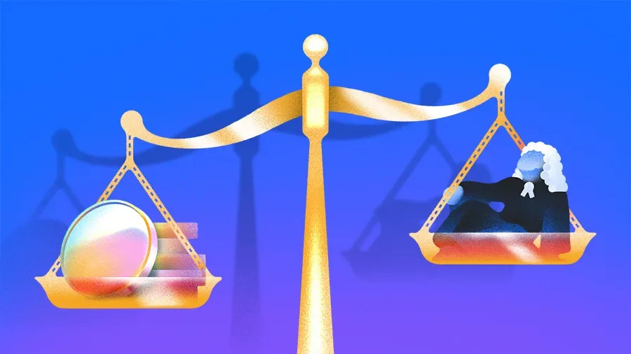
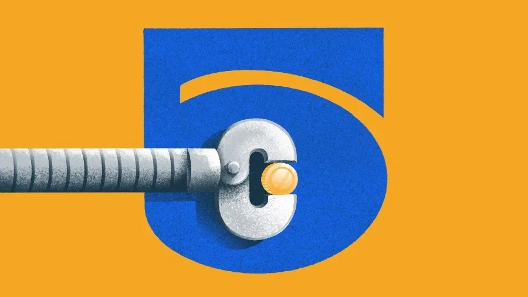
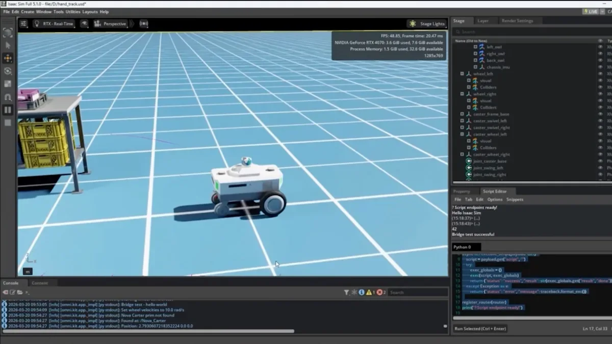
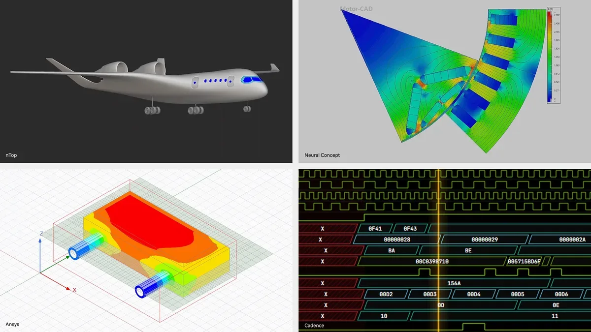
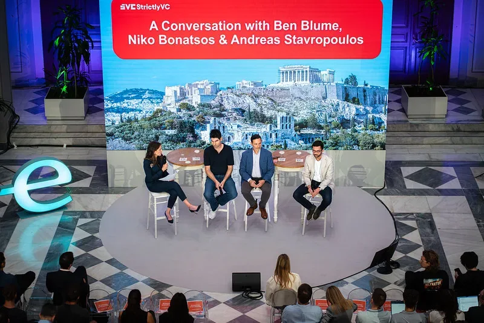
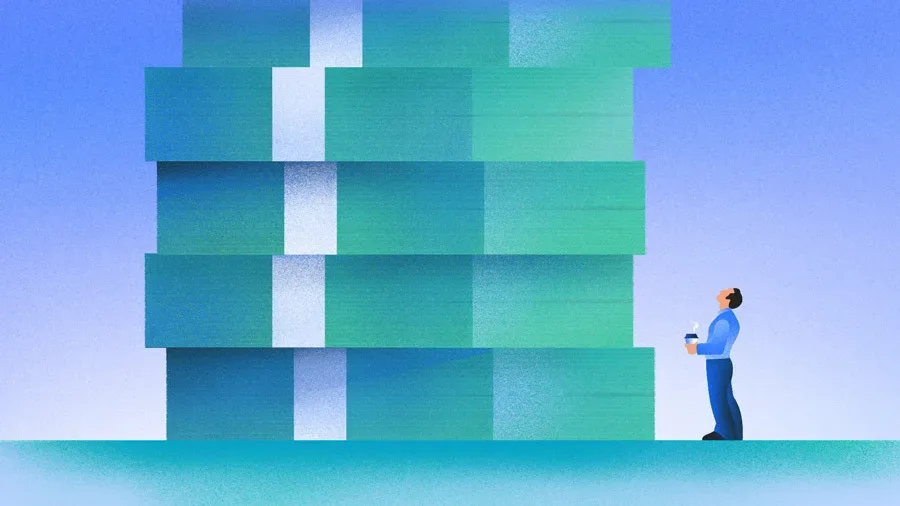
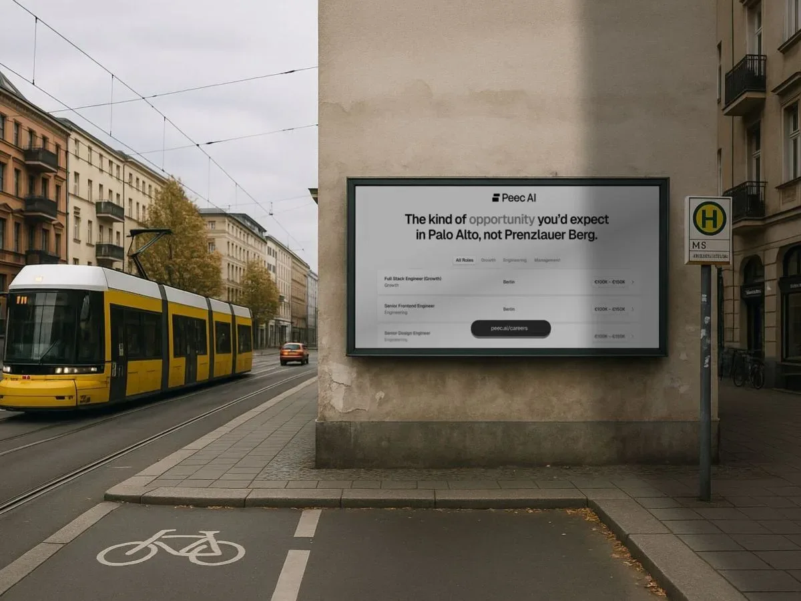

ИнвестицииСтартапы
Десять крупнейших раундов недели: Ramp привлёк $750 млн, три компании — по $500 млн
Ramp — $750 млн, Supabase — $500 млн, Helion — $465 млн: разбираем крупнейшие раунды недели
Crunchbase News
5 июн. 2026 г.Релизы, исследования, продукты, инвестиции и AI-рынок.
Дайджест · 751 новостных материалов · Выпуск за 28 сентября — 3 октября 2026
Ramp — $750 млн, Supabase — $500 млн, Helion — $465 млн: разбираем крупнейшие раунды недели

Платежные ИИ-стартапы для истцов привлекли $682 млн, но оборона — следующий большой рынок.

Три стартапа привлекли $268 млн: металлообработка, метаболическое здоровье и групповые туры.

Как оценить голосового ИИ-агента в корпоративной среде: 213 сценариев, три домена, open-source

Endava переводит разработку на ИИ-агентов: опыт внедрения OpenAI в 11-тысячной компании

Anthropic оценили в $965 млрд и подали заявку на IPO — раньше OpenAI. Что стоит за этим ростом?

Google открыла код ИИ-модели паводков: нацслужбы смогут обучать её на своих данных

GraspGen-X, LCDrive и NitroGen — как NVIDIA решает проблему обобщения в робототехнике, автономном вождении и обучении агентов.

NVIDIA на CVPR анонсировала Cosmos 3, Alpamayo 2 Super и новые инструменты для симуляции физического ИИ и AV.

NVIDIA и партнёры создают автономных ИИ-инженеров на базе открытого blueprint NemoClaw — сокращение времени проектирования с недель до часов.

Claude Opus 4.8 оказался честнее предшественника, но не прошел тест на юридическую достоверность.
Как основательница Clyx собрала $14 млн, выступая на ужинах вместо рассылки питч-деков
Бостон бьёт четырёхлетний рекорд по инвестициям — но ИИ-бум проходит мимо него

ИИ от OpenAI закрыл задачу, которую математики не могли решить с 1946 года — что именно он доказал

Китай закрывает ИИ-таланты внутри страны — что стоит за новыми правилами и делом Manus

Топ-венчурные капиталисты — о групповом мышлении, коррекции и IPO SpaceX.

Anthropic: Opus 4.8 втрое дешевле быстрых режимов и безопаснее предшественника

Google I/O 2026: новые ИИ-инструменты ускоряют научные открытия — от генерации гипотез до рецензирования статей.

Anthropic привлек $65 млрд при оценке $965 млрд, обойдя OpenAI на $125 млрд

YouTube больше не верит авторам на слово: платформа сама будет находить ИИ-видео
Венчурные инвесторы всё активнее вкладываются в стартапы, строящие ИИ-решения для оборонной и энергетической отраслей.
Стартап без ИИ привлёк $20 млн в разгар «ИИ-безумия»

Один разработчик три года строил мессенджер с ИИ без внешних серверов — и наконец пробился в Google Play

Берлинский ИИ-стартап Peec удвоил выручку за полгода и вышел на $10 млн — на фоне сдвига рынка к росту вместо оценок.

Гендиректор Standard Chartered назвал увольняемых «менее ценным капиталом» — и пожалел об этом

3 млрд параметров против GPT-5.4 и Claude Opus: специализация выиграла по всем трём метрикам

Meta Ray-Ban со скидкой до 25%: чем отличаются поколения и стоит ли брать первое

Семь гаджетов, которые журналист ZDNet использует каждый день — с ценами и личными впечатлениями

SpaceX потеряла почти $5 млрд в 2025 году — и виноват в этом ИИ, а не ракеты

Солнечные панели, накопители и тарифы TOU: как не остаться без света летом и сэкономить на электричестве